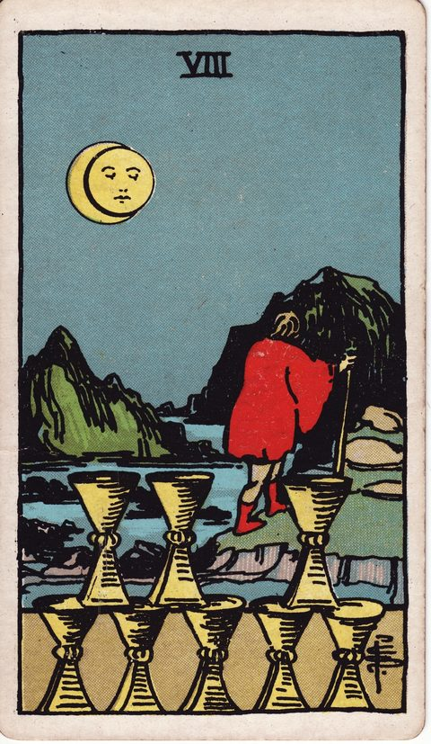
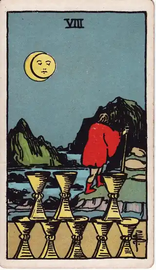

READING
30代で転職するか迷うとき、最初に整理したい5つの問い
（更新 ） ・ DECIDE. 編集部

求人サイトを開いては閉じる。エージェントに登録したまま、連絡を返せていない。今の仕事が嫌いなわけじゃない。でも「このままでいいのか」が、月に何度も頭をよぎる。30代の転職の迷いは、だいたいこの形をしています。
先に言っておくと、このページのゴールは「転職すべき」という答えを出すことではありません。ゴールは、残るにしても移るにしても、自分で選んだと言える状態で決めることです。30代の決断は、勢いより納得がものを言います。
30代で転職を考えはじめると、20代のころとは迷い方が変わります。仕事にはある程度慣れ、任される範囲も広がり、生活の形も固まってきた。だからこそ判断材料が多く、迷いも深くなります。この記事では、迷いを言葉にするための問いを5つ紹介します。カードは未来を当てる道具ではなく、自分の考えを別の角度から眺めるためのきっかけとして使います。
30代の転職で迷いが深くなる理由
30代の迷いが深いのは、能力や意欲が足りないからではありません。むしろ、判断材料が増えたことが原因です。
- 今の職場で積み上げた信頼や実績がある
- 収入や家族、住まいなど、生活への影響が具体的に想像できる
- 一方で「この先10年も同じ働き方でいいのか」という問いも具体的になる
つまり、手放すものと得たいものが、両方ともはっきり見えている状態です。どちらも本物だからこそ、簡単には決められません。迷っている自分を責める必要はなく、「真剣に考えている証拠」と捉えてかまいません。
問い1: 何から離れたいのか、何に向かいたいのか
転職の動機は、大きく「離れたい」と「向かいたい」に分かれます。人間関係や評価への不満から離れたいのか、やってみたい仕事や環境に向かいたいのか。両方あるのが普通ですが、比率を意識すると整理が進みます。

ここで役立つのがカップの8の視点です。このカードは、満たされているはずの場所をあえて離れ、本当に求めるものを探しに行く姿として描かれます。キーワードは「卒業」「旅立ち」「本質の探求」。
カップの8の視点で自分に問うなら、こうなります。
今の場所で、もう満たされなくなっているものは何だろう。それは環境を変えれば満たされるものだろうか。
「離れたい」だけが強いときは、転職先でも同じ不満が繰り返されることがあります。「向かいたい」先が少しでも言葉になっているかを確かめてみてください。
問い2: 最悪のケースは、本当に取り返しがつかないか
30代の転職で怖いのは「失敗したら戻れない」という感覚です。でも、その最悪のケースを具体的に書き出してみると、意外と対処法が見えてくることがあります。
- 転職先が合わなかったら、どうするか
- 収入が一時的に下がったら、何か月持ちこたえられるか
- 今の職場の人との関係は、本当に切れてしまうのか
ぼんやりした不安は大きく見えますが、書き出した不安は「対策を考えられる課題」に変わります。
問い3: 新しい一歩に必要なのは、準備か、勢いか

愚者は、崖の手前を軽やかに歩く旅人の姿で描かれます。キーワードは「新しい一歩」「自由」「可能性」。無謀さの象徴として読まれることもありますが、DECIDE.では「完璧な準備が整う日は来ない」ことを思い出させるカードとして使っています。
30代になると、準備しすぎて動けなくなることがよくあります。資格をもう一つ、貯金をもう少し、景気がよくなってから。どれも正しいのですが、準備が「決めない理由」になっていないかは確かめておきたいところです。
問い4: 今はタイミングとして「巡ってきている」か

運命の輪は「転機」「好機」「巡り合わせ」を表します。ただし、運命に任せろという意味ではありません。自分では選べない流れと、自分で選べる行動を分けて考えるための視点です。
- 自分ではコントロールできないこと: 景気、会社の方針、偶然の出会い
- 自分で選べること: 情報を集める、人に話を聞く、応募してみる
「今がチャンスかどうか」は誰にもわかりません。でも、自分で選べる行動を一つ起こすだけで、見える景色は変わります。応募したからといって、必ず転職しなければならないわけではありません。
問い5: 5年後の自分は、どちらの選択を応援しそうか
最後の問いは、時間軸をずらすことです。5年後の自分が今の自分を振り返ったとき、「動いてよかった」と言いそうか、「残ってよかった」と言いそうか。どちらを選んでも後悔の可能性はありますが、納得して選んだかどうかは後悔の重さを大きく変えます。後悔との付き合い方については、後悔しない選び方でも扱っています。
決めた理由を、記録に残す
5つの問いで整理した内容は、その場で消してしまわず、記録に残しておくことをおすすめします。転職活動は数か月に及ぶこともあり、面接のたび、内定の条件を見るたびに、気持ちは揺れます。そのたびに「そもそも自分は何から離れて、何に向かいたかったのか」を記録で読み返せると、軸がぶれません。
そして決断したあとも、記録は効きます。「なぜ移る（残る）と決めたのか」が自分の言葉で残っていれば、入社後のしんどい時期に「やっぱり間違えた」と頭の中だけで結論を出す前に、一度立ち止まれます。決断の履歴は、将来の自分のための資料です。カードを引いたときの状態と一緒に残せば、そのときの迷いの深さまで辿れます。
最後に
30代の転職に、迷わず決められる人はいません。手放すものと得たいものが両方見えているのは、それだけ真剣に働いてきた証拠です。答えを急がなくていい。5つの問いに一つずつ言葉で答えて、その記録を持って決める。それが、どちらの結果になっても「自分で選んだ」と言える決め方です。